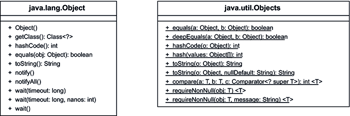

8.4 Die Utility-Klasse java.util.Objects
In Java 7 ist die Klasse Objects hinzugekommen, die einige statische Utility-Funktionen bereithält. Sie führen in erster Linie null-Tests durch, um eine NullPointerException beim Aufruf von Objektmethoden zu vermeiden.
Abbildung 8.11: UML-Diagramm von Objects und Object
Eingebaute null-Tests für equals()/hashCode()
Ist zum Beispiel eine Objektvariable name einer Person null, so kann nicht einfach name.hashCode() aufgerufen werden, ohne dass eine NullPointerException folgt. Drei Methoden von Objects führen null-Tests durch, bevor sie an die Object-Methode equals()/hashCode()/toString() weiterleiten. Eine zusätzliche Hilfsmethode arbeitet mit Comparatoren.
class java.util.Objects |
- static boolean equals(Object a, Object b)
Liefert true, wenn beide Argumente entweder null sind oder a.equals(b) ebenfalls true ergibt, andernfalls liefert es false. Dass Objects.equals(null, null) die Rückgabe true ergibt, ist sinnvoll, und so erspart die Methode einige händische Tests. - static int hashCode(Object o)
Liefert 0, wenn o gleich null ist, sonst o.hashCode(). - static int hash(Object... values)
Ruft hashCode() auf jedem Objekt der Sammlung values auf und verbindet es zu einem neuen Hashcode. Die Implementierung ist einfach ein return Arrays.hashCode(values). - static <T> int compare(T a, T b, Comparator<? super T> c)
Liefert 0, wenn a und b beide entweder null sind, oder der Comparator die Objekte a und b für gleich erklärt. Sind a und b beide ungleich null, so ist die Rückgabe c.compare(a, b). Ist nur a oder b gleich null, so hängt das Ergebnis vom Comparator und der Reihenfolge der Parameter ab.
| Beispiel |
|
Erinnern wir uns an die Methode hashCode() vom Spieler, bei der der Spielername in den Hashcode eingehen soll: Listing 8.24: com/tutego/insel/object/hashcode/Player.java, hashCode() Ausschnitt result = 31 * result + ((name == null) ? 0 : name.hashCode()); result = 31 * result + Objects.hashCode( name.hashCode() ); |
Objects.toString()
Eine weitere statische Methode ist Objects.toString(). Sie ist aus Symmetriegründen in der Klasse, da toString() zu den Standard-Methoden der Klasse Object zählt. Genutzt werden muss die Methode nicht, da es mit String.valueOf() schon eine entsprechende Methode gibt.
class java.util.Objects |
- static String toString(Object o)
Liefert den String »null«, wenn das Argument null ist, sonst o.toString().
| Hinweis |
|
Die Methode String.valueOf() ist überladen und ist somit insbesondere für primitive Argumente viel besser geeignet als Objects.toString(Object), bei der immer erst Wrapper-Objekte aufgebaut werden müssen. Zwar sehen String.valueOf(3.14) und Objects.toString(3.14) gleich aus, aber im zweiten Fall kommt ein Wrapper-Double-Objekt mit ins Spiel. |
null-Prüfungen mit eingebauter Ausnahmebehandlung
Zu den drei statischen Methoden kommen zwei hinzu, die null-Prüfungen übernehmen und im Fehlerfall eine Ausnahme auslösen. Das ist praktisch bei Konstruktoren oder Settern, die Werte initialisieren sollen, aber verhindern möchten, dass null durchgeleitet wird.
| Beispiel |
|
Die Methode setName() soll kein name-Argument gleich null erlauben: public void setName( String name ) public void setName( String name ) |
class java.util.Objects |
- static <T> T n requireNonNull(T obj)
Löst eine NullPointerException aus, wenn obj gleich null ist. Sonst liefert sie obj als Rückgabe. Die Deklaration ist generisch und so zu verstehen, dass der Parametertyp gleich dem Rückgabetyp ist. - static <T> T requireNonNull(T obj, String message)
Wie requireNonNull(obj), nur dass die Meldung der NullPointerException bestimmt wird.
Ihr Kommentar
Wie hat Ihnen das <openbook> gefallen? Wir freuen uns immer über Ihre freundlichen und kritischen Rückmeldungen.
 Jetzt bestellen
Jetzt bestellen


{kind=link}